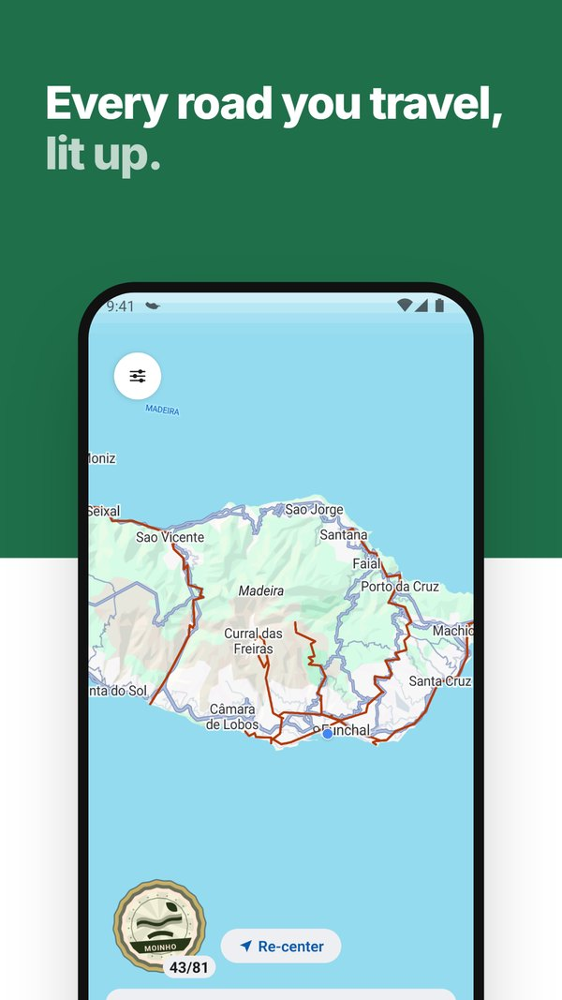
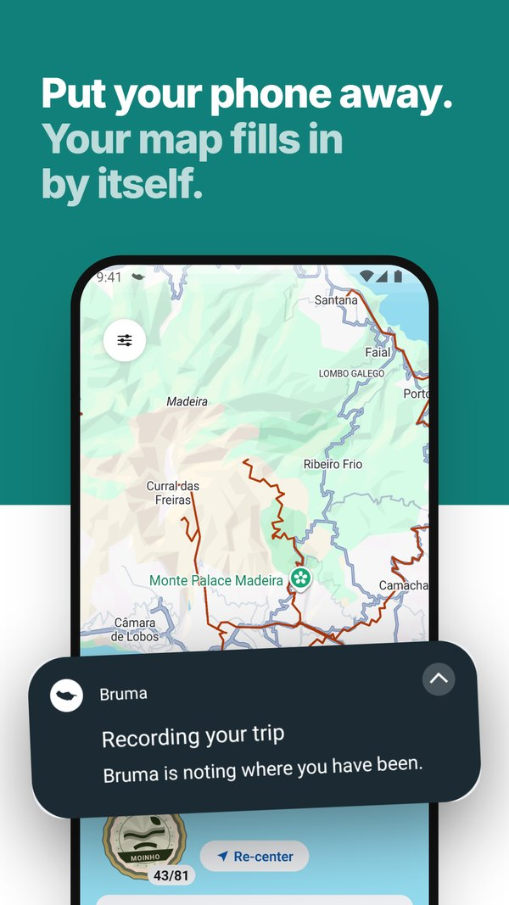
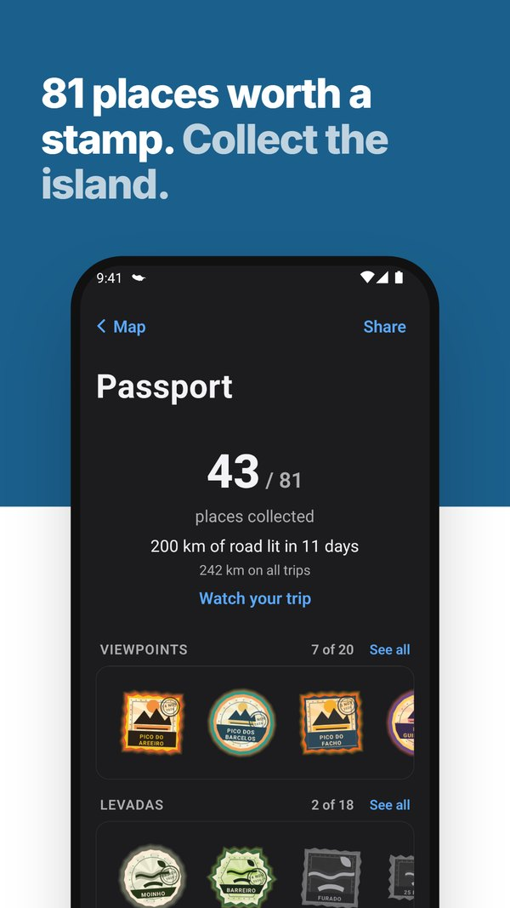
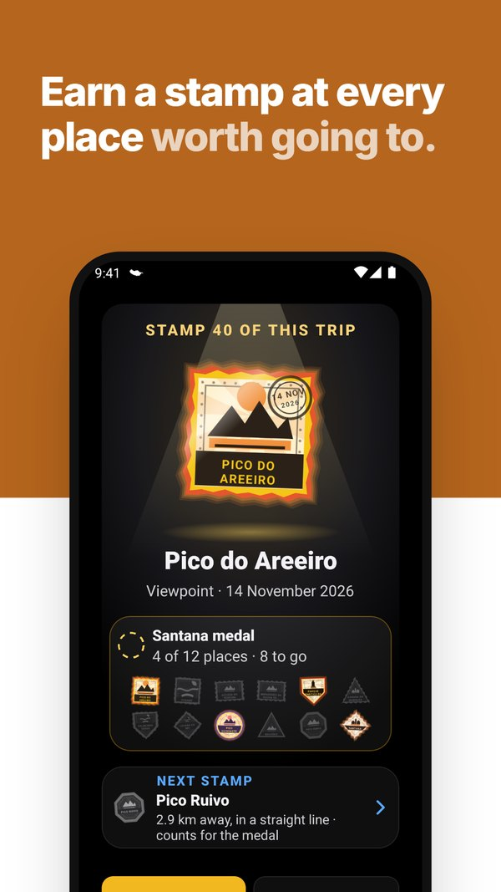
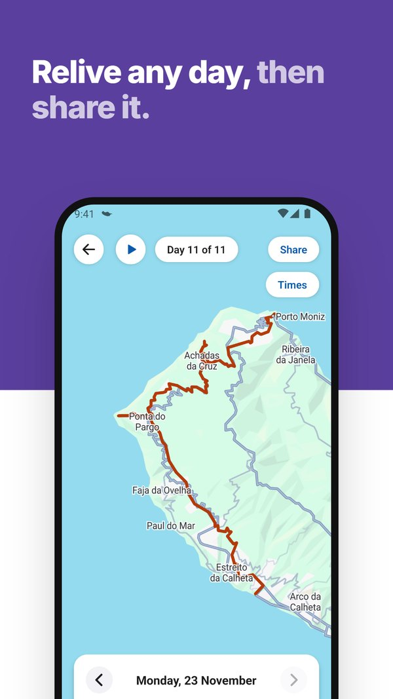

Bruma
Track every road you walk and drive in Madeira
Made in Madeira. Bruma highlights every road and trail you travel, so you can see how much of the island you have really been to. No account, and your trips are never sent to us.





Highlights
Your roads, highlighted
Every road and levada you travel is drawn on the map. Walk a levada or drive a mountain road: both count.
Records in your pocket
Turn on automatic recording once and Bruma keeps going while the app is closed. Prefer to be in charge? Start and stop a walk yourself.
Privacy
Your trip stays on your phone. There is no account and no server behind the app, so there is nothing of yours for us to see.
No signal, still recording
Recording carries on under the laurel forest and deep in the valleys. The map itself needs a connection, and your trip appears on it once you have one.
81 places worth going to
Viewpoints, levadas, villages, beaches and landmarks, chosen one at a time. Reach one and you collect its stamp.
Porto Santo too
The golden island has a passport of its own, with nine places to collect. It is counted apart from Madeira’s.
Your trip, as a picture
At the end, Bruma makes a picture of your map to share. Where you slept is removed first, every time.
Price
The map is free, with no limit. Five stamps and your first levada are free too, and one stamp on Porto Santo. One payment of €5.99 unlocks both islands for good. No subscription, no ads.
FAQ
Will it drain my battery?
Bruma only uses GPS while it is recording, and it is built to rest the GPS while you stay in one place. We have not yet measured battery use on enough phones to give you an honest number, so we will not print one.
Do I have to start a walk, or does it record automatically?
Either. Press the button to start and stop a walk yourself, or turn on automatic recording in Settings and forget about it.
Does driving count?
Yes. Most of the island is reached by car, so roads you drive are highlighted too, not only the ones you walk.
What data leaves my phone?
Nothing from your trip, unless you share the picture yourself. The map underneath comes from Google, so Google sees which part of the island is on your screen, and the map sends Google some details of its own: your phone's model, crash reports, an anonymous number for counting users and how you move the map. Never your trip. If you choose to send us one recording from Settings to help improve the app, that is the only thing we receive. Read the privacy policy.
Does it work without mobile data?
Recording does, with no signal at all. The map needs a connection to load, and your trip appears on it once you are back online.
How do I delete everything?
Settings has a button that erases everything the app has recorded, at once. Removing the app deletes everything too. There is no account, so there is nothing for us to delete.
Does it work on Porto Santo?
Yes. Your roads light up there just the same, and the island has its own passport with nine places.
Is there an iPhone version?
Not yet. For now Bruma is on Android only, from Google Play.
About
Bruma is made in Madeira. Feedback, bug reports and ideas are very welcome: write to slimiedu@gmail.com, or use Send feedback in the app's Settings.